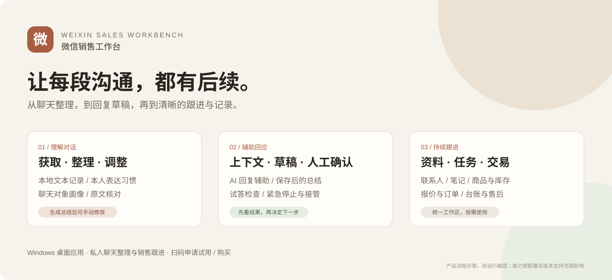

把人和事情联系起来
为聊天对象整理资料、笔记和会话线索，需要回复时能回看背景；业务往来也能接上跟进任务和订单。
个人聊天 · 业务往来把微信会话、聊天对象资料、AI 回复辅助与日常跟进，放进一个清楚、有序的工作台。从个人聊天到业务往来，重要的信息都有地方留下。
适用于 Windows x64 · 使用登录密钥进入 · 具体版本与依赖见下载页

消息往来、资料整理、待办跟进经常发生在不同地方。工作台把这些日常动作集中起来，减少来回查找。
为聊天对象整理资料、笔记和会话线索，需要回复时能回看背景；业务往来也能接上跟进任务和订单。
个人聊天 · 业务往来使用聊天原文整理表达习惯与对象画像，核对是谁说的、何时说的，以及事情是计划还是已经完成。
原文可查 · 总结可改在今日工作查看需要处理的事项，再进入任务、交易或会话。关键操作和运行状态保留可检查的入口。
工作队列 · 状态与记录不需要做模型微调。通过云端模型和可编辑的资料，让后续试答有机会更贴近你的表达和对方的情况。
从本机已保存的聊天中读取可用文本，显示读取数量和范围。当前面向一对一文本，读取能力取决于本机环境及读取器配置。
读取本地历史从你自己的发言中整理语气、措辞和回应习惯。生成的是可以核对与修改的表达总结，而非给你贴上固定的性格标签。
我的表达习惯选择聊天对象，整理已知情况、关系线索、近期关切、已表达的顾虑与决定，以及仍需确认的信息。
当前聊天对象你可以查看生成所用原文，修改并保存总结。重新生成不会自动覆盖已保存的人工调整；试答使用保存的资料，不发送微信消息。当前每次总结采用所选范围最近 160 条文本。
从会话辅助到 CRM 基础管理，十一类工作入口放在侧边栏。按自己的用途使用，个人聊天不必套进销售流程。
集中查看待回复、到期任务、待处理事项和交易相关工作，按需要进入具体记录。
维护联系人档案、标签与相关资料，为会话、笔记、跟进和业务记录提供关联入口。
查看会话上下文，使用 AI 辅助组织回复草稿；核对建议内容后，由你决定下一步操作。
记录后续事项与时间，跟踪处理进度，支持任务延期、交接、取消和完成记录。
把报价、订单、收款记录与售后事项联系起来，便于回看业务进展和需要人工处理的环节。
维护商品、价格与库存相关资料，供业务查询、报价和订单流程使用。
留下沟通要点和补充资料，将重要信息与聊天对象或工作事项关联，方便再次查看。
聊天学习、欢迎语、标签与关键词、定时任务及转发等配置入口；原生能力需按环境逐项确认。
集中管理批量操作与任务执行记录，查看进度、结果和异常；可执行范围以当前版本为准。
检查连接、运行状态和异常信息，提供暂停、紧急停止及相关记录入口。
配置模型连接、工作台规则与本机选项，查看登录状态，并管理备份等维护操作。
工作台与微信保持独立窗口。微信自动化通过软件自带控制器接入，原生贴边标签与工作台管理入口各司其职。
原生标签提供消息监听、消息管理和工具集等入口，具体能力依赖当前微信及控制器版本。
侧边栏管理资料、任务、会话和配置，顶部保留运行状态与紧急停止入口。
先整理历史资料、核对总结，再观察草稿效果。试答流程不会自动接通发送。
下载与授权分开。试用、购买、环境适配和使用问题，都可以直接通过微信联系。
到 GitHub Releases 获取当前版本，阅读该版本的更新说明、依赖与校验信息。
扫码添加下方微信，说明试用或购买需求。使用者只需填写一个登录密钥，无需手动填写租户和成员信息。
配置可用模型与所需本机组件，确认微信连接。先从资料整理和试答开始，逐项检查实际操作结果。
面向 Windows x64 桌面环境，需要可运行的桌面微信及对应控制组件。AI 功能需要另行配置可用模型服务；历史聊天读取需要配置本机读取器。具体运行时、微信版本兼容情况与安装要求，请以下载页说明和试用核对为准。
当前聊天学习读取本机已保存的一对一文本，不代表手机中的全部历史，不包含群聊和图片、语音转写。每次总结使用所选范围最近 160 条文本。新电脑需要先完成本地读取环境配置，不能承诺安装后无需配置即可完整读取。
聊天学习与总结试答不会发送消息。软件提供会话辅助与自动化相关入口，但真实自动回复的完整发送闭环尚未全部验证，不能将其理解为已经验收的无人值守代聊服务。建议先试用并核对资料、草稿与本机控制效果。
通过下方微信申请，具体价格、试用安排与服务范围直接沟通。当前支持由分发者生成 1 天或 1 年的登录密钥，从生成时开始计算，到期后需更换。当前离线授权依赖本机时间，不包含机器绑定、首次激活计时或远程吊销。
软件源码不在此公开仓库中开放。仓库用于产品介绍、使用说明、版本信息和安装包下载。AI 总结和试答会把所选聊天样本传给你配置的模型服务，请先确认该服务的数据处理政策。不要把聊天记录、模型密钥或个人资料提交到公开 Issue。